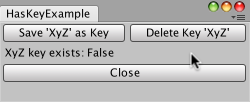

EditorPrefs.HasKey
public static bool HasKey(string key);
Parameters
| key | Name of key to check for. |
Returns
bool The existence or not of the key.
Description 描述
Returns true if key exists in the preferences file.
The preferences file is examined to identify whether the specified key
exists. True or false is returned. In the following example a key and value can be
written into the preference file, or deleted. The existence of the key is checked with the
HasKey function and a message displayed.

Use save, delete, and HasKey preference check.
// Small example where the XyZ key can be saved or deleted from the Preferences file. // The existence of the key is checked using the HasKey() function.
using UnityEngine; using UnityEditor;
public class HasKeyExample : EditorWindow { private string keyName = "XyZ";
[MenuItem("Examples/HasKey Example")] static void Init() { HasKeyExample window = (HasKeyExample)EditorWindow.GetWindowWithRect( typeof(HasKeyExample), new Rect(0, 0, 250, 80)); window.Show(); }
void OnGUI() { EditorGUILayout.BeginHorizontal();
if (GUILayout.Button("Save '" + keyName + "' as Key")) EditorPrefs.SetString(keyName, "abc123");
if (GUILayout.Button("Delete Key '" + keyName + "'")) EditorPrefs.DeleteKey(keyName);
EditorGUILayout.EndHorizontal();
GUILayout.Label(keyName + " key exists: " + EditorPrefs.HasKey(keyName));
if (GUILayout.Button("Close")) this.Close(); }
// delete the key each time the demo starts void OnFocus() { EditorPrefs.DeleteKey(keyName); } }